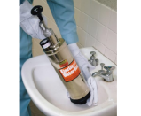

2025年
問題134 排水管の清掃と診断に関する次の記述のうち，最も不適当なものはどれか．
（1）高圧洗浄法による排水管の清掃は，10～20Mpaの圧力の水を噴射させて洗浄する．
（2）スネークワイヤを用いるワイヤ式清掃法を排水横管に適用する場合は，長さ25m程度が限界である．
（3）排水管内の詰まり具合や腐食の状況は，内視鏡や超音波厚さ計等により確認する．
（4）空気圧洗浄法による排水管の清掃は，0.1Mpa程度の空気圧を管内に放出し，その衝撃波で閉塞物を除去する．
（5）小便器用の排水管に付着した尿石の除去には，酸性洗浄剤を用いる．
2025年
問題134 正解（4） 頻出度AAA
空気圧洗浄法の空気圧は，0.2〜0.32MPa（最大1.0MPa）である（2025-34-1図，2025-134-1表参照）．

出典 株式会社カンツール
https://kantool.co.jp/product/page/3/
| 洗浄方法 | 対象排水管 | 対象現象 | 備考 | |
| 機械式洗浄法 | 高圧水法（高圧洗浄法） | 器具排水管 排水横枝管 排水立て管 排水横主管 敷地排水管 |
油脂類等の付着汚雑物・異物の停滞，詰まり | 高圧ポンプを装備した高圧洗浄車，ホース，ノズル等を用いて5～30MPaの高圧の水を噴射して排水管内の砂や汚物等を除去する．ちゅう房の固いグリースの除去には，スネークワイヤを併用する． |
| フレキシブルワイヤ （ワイヤ式管清掃機）法 |
器具排水管 排水横枝管 排水横主管 敷地排水管 |
グリースなどの固い付着物の除去汚雑物・異物の停滞，詰まり | スネークワイヤ法とも言う．ワイヤの長さは25m以下なので，排水横管では25mまで，排水立て管ではワイヤの重量から20m程度が限界． | |
| ロッド法 | 敷地排水管 | 汚雑物・異物の停滞，詰まり | 1～1.8mの鉄製の棒（ロッド）をつなぎ合わせ，排水管内を清掃する．最大30mまで．運搬が容易． | |
| 空気圧洗浄法（ウォーターラム法） | 器具排水管 排水横枝管 |
詰まり汚雑物・異物の停滞 | 閉塞した管内に水を送り，手動の空気ポンプで圧縮空気を一気に放出してその衝撃で閉塞物を除去する．空気圧は，0.2〜0.32MPa（最大1.0MPa）である．高圧洗浄ができない部分で利用される．単純な停滞・詰まりに有効．グリースなどの固い付着物の除去は難しい． | |
| 化学的洗浄法 | アルカリ性洗浄剤 | 器具排水管 排水横枝管 |
有機物・油脂類の付着詰まり | アルカリ性洗浄剤（苛性ソーダ等）は温水を加えると発熱して活性化し，排水管の有機性付着物を溶解する． |
| 酸性洗浄剤 | 器具排水管 | 尿石等尿固形物の付着，詰まり | 酸性洗浄剤（硫酸・塩酸等）で，小便器配管の尿石等を除去する． | |
-(3)排水管の劣化状態を調べる非破壊検査方法として，腐食程度の確認には，超音波厚さ計，X線，過流探傷装置等，管内部の詰まり具合の確認は写真を撮影することができる内視鏡が用いられる．
X線による排水管の劣化状態の調査例を2025-134-2図に示す．

出典 カワナベ工業株式会社
https://www.kawanabe.co.jp/business/suidou/spt.html